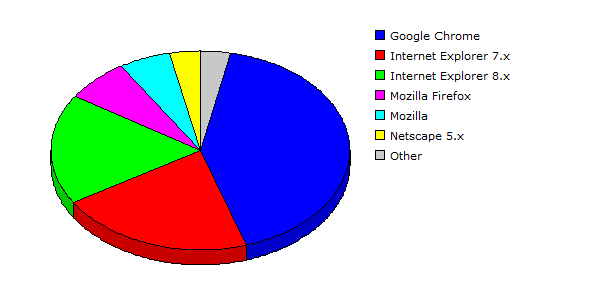

| Rank |
Browser |
Hits |
Visitors |
| 1 |
Google Chrome |
9704 |
45.67% |
835 |
41.73% |
| 2 |
Internet Explorer 7.x |
2962 |
13.94% |
424 |
21.19% |
| 3 |
Internet Explorer 8.x |
4874 |
22.94% |
362 |
18.09% |
| 4 |
Mozilla Firefox |
1822 |
08.58% |
138 |
06.90% |
| 5 |
Mozilla |
398 |
01.87% |
110 |
05.50% |
| 6 |
Netscape 5.x |
876 |
04.12% |
67 |
03.35% |
| 7 |
Safari |
609 |
02.87% |
64 |
03.20% |
| 8 |
Lynx |
1 |
00.00% |
1 |
00.05% |
| |
Total |
21246 |
2001 |
|
Description: This report contains statistics about the browsers that your visitors use.
|
|